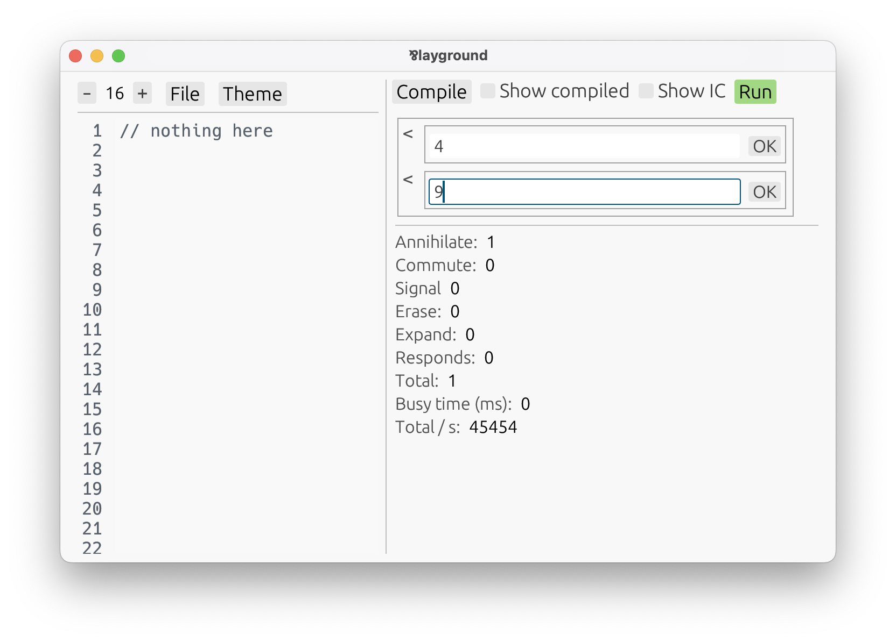

Introduction
Par is affectionatelly named after the most bemusing connective of linear logic: ⅋, pronounced “par”. That’s because Par is based directly on (classical) linear logic, as an experiment to see where this paradigm can take us.
Jean-Yves Girard — the author of linear logic, and System F, among other things — wrote on the page 3 of his first paper on linear logic:
The new connectives of linear logic have obvious meanings in terms of parallel computation, especially the multiplicatives.
This was in 1987. In hindsight, it wasn’t that obvious.
Par is an attempt to take that idea seriously — to turn linear logic into a practical programming language.
Not eager. Not lazy. Concurrent.
In Par, evaluation starts as soon as a value is defined. But you don’t wait for it to finish — evaluation happens concurrently.
It’s a bit like a world where everything is async, and nothing ever needs an await. Even functions
start evaluating as soon as they’re constructed — before they even receive an argument.
This model avoids blocking entirely — except when choosing a branch. That’s the only time things pause. Want laziness? Wrap a value in a choice. It won’t evaluate until the choice is selected. That’s all it takes.
This gives you precise control over evaluation — where needed, and never more. Evaluation order is part of the type system. It’s explicit, safe, and plays well with concurrency.
Types that describe behavior
Par’s types don’t just describe what values are — they describe what values do.
- A function tells you what input is needed and what comes next.
- An iterative value is like an object you can interact with repeatedly.
- A choice offers structured operations; an either demands case analysis.
- A box marks values as reusable and discardable.
- A recursive type unfolds until it ends.
- And more…
In fact, Par’s types are session types. They let you express entire communication protocols — values that unfold in well-typed steps, over time.
That makes Par’s type system unusually powerful: It models interaction, not just data.
Paradigms emerging from first principles
Par is naturally good in functional programming, but it doesn’t end there. Other paradigms emerge out of the underlying linear logic foundation.
One does it in a rather unique way: object-oriented programming.
An iterative choice type behaves like an interface:
a collection of named operations, available repeatedly. To “implement” one, you just construct a value
that behaves accordingly — no classes, inheritance, or ceremony.
Dynamic dispatch is first-class, via choice types. You dispatch directly on values, not on subclasses. This makes behavior easy to model and easy to pass around.
Values become objects, just by what they can do.
Orthogonality goes wide, not deep
Par doesn’t have dependent types. It doesn’t have metaprogramming, higher-order kinds, or macro systems.
Instead of going deeper into complexity, Par goes wider.
Its design focuses on small, composable ideas. For Par, it’s not that important to have a small number of features. What’s important is that each feature is small, and covers something no other feature does.
Most of those ideas are taken directly from classical linear logic. Every type corresponds to a logical connective. Even recursion and polymorphism are built from first principles — not bolted on.
And in doing so, it makes room for multiple paradigms to emerge:
- Functional programming with side-effects via linear handles.
- A unique object-oriented style, where interfaces are just types and implementations are just values.
- A concurrent foundation, where execution is implicit and non-blocking by default.
All of this comes from the same source: the logic underneath.
An ambitious stride towards totality
As if session types and concurrency weren’t enough, Par also aims to be total.
That means:
- No exceptions or panics.
- No deadlocks. Par imposes a structure where deadlocks are impossible to express.
- No accidental non-termination. By default, recursion and corecursion are checked to prevent infinite loops.
At the moment, the system isn’t powerful enough to capture some more complex algorithms, so there’s an escape hatch. But, the eventual goal is to get rid of it.
Let’s dive in!
Par is a language in active development. It’s not production-ready — but it’s expressive, and ready to be explored.
If you’re curious about what programming can look like when guided by logic — turn the page.
Getting Started
Let’s install the Par programming language. Currently, we have:
- A playground to code and interactively explore your and built-in definitions via an automatic UI.
- A
runcommand to run definitions with the unit type straight from the console.
At the moment, there are no pre-built binaries, or releases, so we’ll have to build it from souce.
1. Install Rust and Cargo
Par is written in Rust. To be able to build it from source, we’ll need to install Rust and its build tool, called Cargo.
The easiest way to do that is via rustup. The website instructs:
Run the following in your terminal, then follow the onscreen instructions.
$ curl --proto '=https' --tlsv1.2 -sSf https://sh.rustup.rs | sh
2. Clone Par’s repository
The next step is to obtain Par’s source code. That is located on GitHub. Clone it locally by running the following in your terminal:
$ git clone https://github.com/faiface/par-lang
3. Build and install Par’s CLI tool
Navigate to the newly created directory:
$ cd par-lang
Then install the executable using Cargo:
$ cargo install --path .
This may take a while as Rust downloads and builds all the dependencies.
4. Try it out!
A new par-lang command should now be available in your terminal. It may be necessary
to restart the terminal for it to appear.
If successful, start the Par’s playground:
$ par-lang playground
And the playground should appear:
If all is good, turn the page and let’s get into the language itself!
In case of problems, head over to our Discord, we’ll try and help.
Basic Program Structure
For now, Par lacks a proper module system. Each program is contained in one file, with built-in names imported automatically.
These built-in names are scoped in modules — for example, Int.Add is a function called Add in the
Int module — but there is no way to define custom modules. All we can do is define types and values,
and then run them, interactively!
Before we start defining our own types and values, the built-in definitions already give us something to play with.
Let’s open the playground!
$ par-lang playground
Press Compile, then hit the Run button:
All the built-in names are there. Let’s run Int.Add:

An automatic UI shows up, telling us to input two numbers. After confirming both inputs, we get a result:
The playground features an automatic UI. Nobody made a specific interaface for this Int.Add function.
Instead, the UI that shows up is based purely on its type — here, a function from two integers to an
integer result.
Go ahead, and play with any built-in definition! Then, when you turn the page, we’re going to talk about creating our own.
Definitions & Declarations
At the top level, a Par file consists of definitions, declarations, and type definitions.
These define global names that can be used throughout the file, an unlimited number of times.
Because of Par’s linear type system, local variables may be required to be used exactly once. That is if they have a linear type. Global definitions can be used any number of times regardless of their type.
Par has a simple naming rule:
- Global names start with an upper-case letter. That is global types, functions, and so on.
- Local names start with a lower-case letter, or
_. That includes local variables, function parameters, and type variables in generic functions.
While global names can be used throughout the program, there is an important restriction!
❗ Cyclic usages are forbidden! Both in types, and in definitions.
That means that if a type
Aliceuses a typeBob, thenBobcan’t useAlice. Same for functions, and other definitions. In fact,Alicecan’t useAliceeither!
This apparently mad restriction has important motivations, and innovative remedies.
The motivation is Par’s ambitious stride towards totality — which means preventing infinite loops.
Unrestricted recursion is a source of infinite loops, and while that can be partially remedied by totality checkers, such as in Agda, Par chooses a different approach. That is outlawing unrestricted recursion, and instead relying on more principled ways to achieve cyclic behavior, including what’s usually achieved by mutual recursion.
The remedies come in the form of these more principled ways. Fortunately, they don’t just replace the familiar recursion by clunkier mechanisms, they bring their own perks.
Naive recursion on the term level (like in functions) is replaced by a powerful,
universal looping mechanism, called begin/loop. It’s a single tool usable for:
- Recursive reduction. Analyzing lists, trees, or even files.
- Iterative construction. Those are objects that can be interacted with repeatedly.
- Imperative-looking loops in process syntax.
Naive recursion in types is replaced by anonymous recursive and iterative (corecursive) types.
Definitions
Global values (including functions) are defined at the top level starting with the keyword def,
followed by an upper-case name, an = sign, and an expression computing the value.
def MyNumber = 7
In this case, Par is able to infer the type of MyNumber as Nat
(a natural number), so no type annotation is needed. Often, a type annotation is needed, or wanted.
In those cases, we can add it using a colon after the name:
def MyName: String = "Michal"
Declarations
Sometimes a type is longer and a definition becomes busy and hard to read with it.
For example, here’s a simple function adding up all the numbers in a list:
def SumList: [List<Int>] Int = [list] list.begin.case {
.end! => 0,
.item(x) xs => Int.Add(x, xs.loop),
}
The code uses many concepts that will be covered later, so only focus on the parts you know: def,
:, and =. (You can run it in the playground, though!)
In such a case, the type annotation can be extracted into a separate declaration. A declaration
starts with the keyword dec, followed by the name we want to annotate, a colon, and a type.
dec SumList : [List<Int>] Int
def SumList = [list] list.begin.case {
.end! => 0,
.item(x) xs => Int.Add(x, xs.loop),
}
That’s much better!
Declarations may be placed anywhere in a file, so feel free to put them all on top, or keep them close to their corresponding definitions.
Type Definitions
Par has a structural type system. While many languages offer multiple forms of type definitions
— for example, Rust has struct, enum, and more — Par only has one: type aliases.
With recursive and iterative types being anonymous, Par has no issue treating types as their shapes, instead of their names. In fact, type definitions are completely redundant in Par. Every usage of a global type (with the exception of the primitives) can be replaced by its definition, until no definitions are used.
Actually, all definitions are redundant in Par. However, programming without them would be quite tedious.
To give a name to a type, use the type keyword at the top level, followed by an upper-case name,
an = sign, and a type to assign to it.
type MyString = String
MyString is now equal to String and can be used wherever String can.
A more useful example:
type StringBuilder = iterative choice {
.build => String,
.add(String) => self,
}
This particular type is a part of the built-in functionality, under the name
String.Builder.
That’s an iterative choice type, something we will learn later. It’s an object that can be interacted with repeatedly, choosing a branch (a method) every time.
While we could paste the entire definition every time we would use this StringBuilder, it’s quite
clear why we wouldn’t want to do that.
Generic types
A type definition may include generic type parameters, turning it into a formula that can be instantiated with any types substituted for the parameters.
The type parameters are specified in a comma-separated list inside angle brackets right after the type name. The parameters are local names, so they must be lower-case.
For example, the built-in List type has one type parameter:
type List<a> = recursive either {
.end!,
.item(a) self,
}
That’s a recursive either type, also something we will
learn later. In this case, it defines a finite, singly-linked list of items of type a.
To use a generic type, we append a comma-separated list of specific type arguments enclosed in angle brackets after the type’s name.
type IntList = List<Int>
The resulting type is obtained by replacing each occurrence of each type variable by its corresponding type argument. So, the above is equal to:
type IntListExpanded = recursive either {
.end!,
.item(Int) self,
}
Strings & Numbers
Before taking a stroll in the diverse garden of Par’s types, let’s stop by the most basic ones: the primitives.
At the moment, Par has four primitive types:
Int— Integers, positive and negative whole numbers, arbitrary size.Nat— Natural numbers, starting from zero, arbitrary size. They are a subtype ofInt.String— UTF-8 encoded sequence of Unicode characters.Char— Singular Unicode characters.
There’s a significant distinction between primitives and all other types in Par.
The thing is, Par has a fully structural type system. All custom type definitions are just aliases — there is no way to create opaque types. (But, encapsulation is perfectly possible.)
Primitives are different in that they are opaque. They are magical types, distinct from others, that are operated on using magical built-in functions. This is necessary to achieve their efficient representation.
Primitives are manipulated using magical built-in functions.
To find the list of all built-in functions:
- Open the playground.
$ par-lang playground - Press Compile, and Run. Scroll the list that pops up.

To figure out the type of a built-in function:
- Assigning it to your own
def, such as:
Par knows the type ofdef Examine = Int.ToStringInt.String, so it will infer it forExamineas well. - Press Compile.
- Move the cursor to the definition. The playground will display the type on the right,
in green.

The type [Int] String is a function from Int to String. We will cover
functions and other types in detail later. Despite that, we’ll still play with
some built-in functions in this section. All you need to know is that
the square brackets enclose function arguments, and the result type follows. For example:
[Int, Int] Intis a function from twoInts to anInt.[Int, Nat, Nat] Natis a function from oneIntand twoNats to aNat.
The current set of built-in functions is very minimal. They’re just enough to be able to write more useful functions yourself, but they’re nowhere close to a standard library. For example, there are no functions for analyzing strings, aside from
String.Reader, which is flexible enough to implement all you’d need. You just need to do it yourself.Keep in mind that Par is early in development. It’s bringing an innovative paradigm, which we’re still figuring out how to use best. Creating an expansive standard library would be premature before we understand what’s actually going on here.
Now, let’s take a look at the primitives!
Int
Integers are arbitrarily sized whole numbers, positive or negative.
Their literals consist of digits, optionally prefixed with - or +, and may include underscores
for readability.
def Num1: Int = 7
def Num2: Int = -123_456_789
The type annotations are not needed:
def Num3 = 42
def Num4 = -2202
Without annotations, Num3 actually gets inferred as Nat. But, since Nat is a
subtype of Int, it can be treated as an Int too.
Built-in functions are used for arithmetic operations. For example:
def Num5 = Int.Add(3, 4) // = 7
def Num6 = Int.Mul(3, 4) // = 12
Go ahead and explore more of them in the playground!
Nat
Natural numbers are just integers excluding the negative ones. Nat is a subtype of Int, so
every variable of type Nat can be used as an Int, too.
def Num7 = 14 // inferred as `Nat`
def Num8 = 17 // inferred as `Nat`
// perfectly valid
def Num9 = Int.Add(Num7, Num8)
While Num7 and Num8 are inferred as Nats, Num9 will be an Int because that’s what
Int.Add returns. To get a Nat result, use Nat.Add, which only accepts Nats:
def Num10 = Nat.Add(Num7, Num8) // inferred as `Nat`
Several built-in functions aid in converting Ints to Nats. For example:
Nat.Maxhas type[Nat, Int] Nat— the second argument is allowed to be anInt. Yet it’s guaranteed to return aNat.Int.Abshas type[Int] Nat— an absolute value is always aNat.
def Num11: Nat = Nat.Max(0, -1000) // = 0
def Num12: Nat = Int.Abs(-1000) // = 1000
Unlike Ints, natural numbers can be looped on using Nat.Repeat, which is one of their main
uses. We’ll learn more about that in the section on recursive types.
String
Strings are represented as UTF-8 encoded sequences of Unicode characters. Their literals are
enclosed in double quotes ("), and may contain escape sequences, such as \n, familiar from
other languages.
def Str1 = "Hello" // inferred as `String`
def Str2 = "World"
To concatenate strings, use String.Builder. To fully understand how it works, we’ll need to
cover iterative and choice types, but perhaps
you can get the idea:
def Str3 = String.Builder
.add(Str1)
.add(", ")
.add(Str2)
.build // = "Hello, World"
Analyzing strings — such as finding, splitting, or parsing — is done using String.Reader.
To be able to use it, more knowledge of the language is needed first. But, feel
free to play with it in the playground, or check out the StringManipulation.par example in
the examples/ folder.
Numbers can be converted to strings using Int.ToString:
def Str4 = Int.ToString(14) // = "14"
def Str5 = Int.ToString(-7) // = "-7"
Note, that Nat is a subtype of Int, so any natural number can also be converted to a string
this way, too. In fact, that’s exactly what happens with Str4.
Char
A Char is a single Unicode character. Char literals are enclosed in single quotes:
def Char1 = 'a' // inferred as `Char`
def Char2 = '\n'
There’s a built-in function to check if a Char is a part of a character class:
def IsWhitespace = Char.Is(' ', .whitespace!) // = .true!
There’s no built-in function turning a String to a list of Chars. Feel free to
copy-paste this one, if you ever need it:
dec Chars : [String] List<Char>
def Chars = [s] String.Reader(s).begin.char.case {
.end! => .end!,
.char(c) rest => .item(c) rest.loop,
}
The let Expression
Just one last stop before setting on a tour through Par’s types and their expressions: the let
expression. It’s for assigning a variable and using it in another expression.
Start with the keyword let, then a lower-case name of the variable, an = sign, a value
to assign to the variable, and finally the keyword in followed by an expression that may use
the variable.
That’s a mouthful.
def Six = let three = 3 in Nat.Add(three, three)
The left side of the = sign can actually be more than a variable!
For one, it can have an annotation:
def Six = let three: Nat = 3 in Nat.Add(three, three)
And it can also be a pattern:
def Twelve = let (a, b)! = (3, 4)! in Nat.Mul(a, b)
The above is a combination of a pair and a unit pattern. We’ll learn more about those soon.
Type annotations always go after a variable name. So, this is invalid:
let (a, b)! : (Nat, Nat)! = (3, 4)! in ... // Error!The annotation does not follow a variable. But this is good:
let (a: Nat, b: Nat)! = (3, 4) in ... // Okay.
Now, onto types and their expressions!
The Big Table
Expression syntax
| Type | Construction | Destruction |
|
|
|
|
|
|
|
|
|
|
|
|
|
|
|
|
No expression syntax | No expression syntax |
Process syntax
| Type | Construction | Destruction |
|
|
|
|
|
|
|
|
|
|
|
|
|
|
|
|
|
Shown on the left |
Types & Their Expressions
Types in Par serve two seemingly incompatible purposes at the same time:
- Objects of every-day programming, like functions and pairs.
- Session-typed communication channels.
In the concurrent framework of linear logic, these are one and the same. But to make this connection harmonious and ergonomic, some unusual choices have to be made in the design of the basic building blocks.
Types in Par are sequential. The basic building blocks — pairs, functions, eithers (sums), and choices (co-sums) — all read as first this, then that.
Let’s take pairs. In many programming language, (A, B) is the type of a pair of A and B.
This approach is not sequential: both types assume equal position.
In Par, the pair type is instead (A) B. The second type being outside of the parentheses is
essential. It allows us to sequentially continue the type without the burden of nesting.
Compare
(A, B)(A, (B, C))(A, (B, (C, D)))
against
(A) B(A) (B) C(A) (B) (C) D
Of course, most languages that provide (A, B) pairs also support triples (A, B, C), and
quadruples (A, B, C, D), so let’s mix it up!
The usual syntax for function types is A -> B. That is sequential, but in Par we have a syntax
that plays more nicely with the pairs: [A] B. Now compare
(A, B -> (C, D -> E))
versus
(A) [B] (C) [D] E
We can read it as: first give A, then take B, then give C, then take D, and finally give E.
This is starting to look a lot like session types! An alternative reading of the type could be:
first send A, then receive B, then send C, then receive D, and finally proceed as E.
And that, in a nutshell, is how Par unifies every-day types with session types.
This chapter covers the every-day aspect of types in Par. For the session types aspect, check out Processes.
Unit
The unit type — spelled ! — has a single value, also !.
def Unit: ! = !
Unit is frequently used as an end-marker for other types. All composite types — such as pairs, eithers, and choices — have an obligatory “and then” part. The unit type does the job for the case of “and then nothing”.
For example, the predefined List<a> type has this definition:
type List<a> = recursive either {
.end!,
.item(a) self,
}
Each variant in an either type has an obligatory payload. For the node marking the
end of the list, the payload is empty, and so it’s !.
Construction
The expression ! has type ! and is the only possible value for this type.
def Unit = ! // infers `Unit` to be of type `!`
Destruction
Being a data type, variables of type ! can be left unused.
If ! is a part of a larger type, it may be needed to assign it as a part of a pattern. For this
purpose, the pattern ! will destruct a ! value without assigning it to a variable.
def TestUnitDestruction = do {
let unit = !
let ! = unit
} in !
This is useful when matching an end of a list:
dec GetFirstOrZero : [List<Int>] Int
def GetFirstOrZero = [list] list.case {
.end! => 0, // `!` is a pattern here
.item(x) _ => x,
}
Or when destructing a !-ended tuple:
dec SumPair : [(Int, Int)!] Int
def SumPair = [pair]
let (x, y)! = pair // `!` is a pattern here
in Int.Add(x, y)
def Five =
let pair = (2, 3)!
in SumPair(pair)
Either
Either types are the well-known sum types, otherwise known as tagged unions.
They defined a finite number of variants, each with a different name and a payload. A value of an either type is one of its variants.
type StringOrNumber = either {
.string String,
.number Int,
}
def Str: StringOrNumber = .string "Hello!"
def Num: StringOrNumber = .number 42,
An either type is spelled with the keyword either, followed by curly braces enclosing a
comma-separated list of variants.
Each variant has a lower-case name prefixed by a period and followed by a single, obligatory payload type:
either {
.variant1 Payload1,
.variant2 Payload2,
.variant3 Payload3,
}
Since each payload must be a single type, units, pairs, and other types are used to define composite payloads. For example:
type MaybeBoth<a, b> = either {
.neither!,
.left a,
.right b,
.both(a, b)!,
}
Either types are frequently used together with recursive types to define finite tree-like structures.
type BinaryTree<a> = recursive either { .empty!, .node(a, self, self)!, }The predefined
List<a>type is a combination ofrecursiveandeither:type List<a> = recursive either { .end!, .item(a) self, }
Construction
Values of either types are constructed starting with .name — the name of one of the variants in
the type — followed by an expression of the corresponding payload type.
Here are some examples of constructions for an either type that demonstrates many possible payloads:
type Varied = either {
.unit!, // payload is `!`
.string String, // payload is `String`
.number Int, // payload is `Int`
.pair(Int) String, // payload is `(Int) String`
.symmetricPair(Int, String)!, // payload is `(Int, String)!`
.nested either { // payload is another either type
.left!,
.right!,
},
.nested2(String) either { // payload is a pair of `String` and another either
.left!,
.right!,
}
}
def Example1: Varied = .unit!
def Example2: Varied = .string "Hello!"
def Example3: Varied = .number 42
def Example4: Varied = .pair(42) "Hello!"
def Example5: Varied = .symmetricPair(42, "Hello!")!
def Example6: Varied = .nested.left!
def Example7: Varied = .nested.right!
def Example8: Varied = .nested2("Hello!").left!
def Example9: Varied = .nested2("Hello!").right!
Pairs are frequently used in payloads of either types, both in their symmetric and sequential
styles. The sequential style makes chaining either types with attached payloads very natural, like
in the .nested2 variant.
Destruction
Values of either types can be deconstructed using .case expressions, similar to pattern-matching in
other languages.
A .case expression starts with the value to be destructed, followed by .case, and a list of
comma-separated branches enclosed in curly braces, one per each variant.
value.case {
// branches
}
Each branch consists of the name of its variant, a pattern to assign the payload to, then a =>
followed by an expression computing the result for that branch. All branches must evaluate to the
same type.
// branch
.name pattern => expression,
The patterns to assign the payloads are the same as can appear on the left side of
let assignments:
For a small example, we analyze the Str and Num values of the StringOrNumber type from above:
// evaluates to "Hello!"
def ResultForStr = Str.case {
.string s => s,
.number n => Int.ToString(n),
}
// evaluates to "42"
def ResultForNum = Num.case {
.string s => s,
.number n => Int.ToString(n),
}
For a comprehensive example, here’s a big function converting the above Varied type
to a String:
dec VariedToString : [Varied] String
def VariedToString = [varied] varied.case {
.unit! => ".unit!",
.string s => String.Builder.add(".string ").add(String.Quote(s)).build,
.number n => String.Builder.add(".number ").add(Int.ToString(n)).build,
.pair(n) s =>
String.Builder
.add(".pair(")
.add(Int.ToString(n))
.add(") ")
.add(String.Quote(s))
.build,
.symmetricPair(n, s)! =>
String.Builder
.add(".symmetricPair(")
.add(Int.ToString(n))
.add(", ")
.add(String.Quote(s))
.add(")!")
.build,
.nested inside => String.Builder.add(".nested").add(inside.case {
.left! => ".left!",
.right! => ".right!",
}).build,
.nested2(s) inside =>
String.Builder
.add(".nested2(")
.add(String.Quote(s))
.add(")")
.add(inside.case {
.left! => ".left!",
.right! => ".right!",
}).build,
}
Pair
A pair is two independent values packed into one. The only thing that differentiates pairs in Par, compared to other languages, is their sequential syntax. While unusual, it makes pairs applicable to a much wider set of use-cases.
A pair type consists of two types, the first enclosed in round parentheses.
type Pair = (String) Int
If the second type is another pair, we can use syntax sugar to write it more concisely:
type Triple1 = (String) (Int) String
type Triple2 = (String, Int) String
// these two are exactly the same type
For a symmetric pair syntax, it’s idiomatic to use the unit type as the last element.
type SymmetricPair = (String, Int)!
Pairs in their sequential style are frequently used in combination with other types to insert values
into bigger structures. The predefined List<a> type uses a pair for its .item variant:
type List<a> = recursive either {
.end!,
.item(a) self,
}
An infinite stream type may use a pair to produce an element together with the remainder of the stream:
type Stream<a> = iterative choice {
.close => !,
.next => (a) self,
}
Construction
Pair values look the same as their types, with values instead of types in place of elements.
def Example1: Pair = ("Hello!") 42
def Example2: Triple1 = ("Alice") (42) "Bob"
// `Triple1` and `Triple2` really are the same type
def Example3: Triple1 = ("Alice", 42) "Bob"
def Example3: Triple2 = ("Alice", 42) "Bob"
// notice the `!` at the end
def Example4: SymmetricPair = ("Hello!", 42)!
When embedded in other types, sequential pairs blend in seamlessly:
def Names: List<String> = .item("Alice").item("Bob").item("Cyril").end!
// | | |_____________
// | |_________________________
// |_______________________________________
Destruction
Pairs are deconstructed in patterns on assignments. Those can appear in:
let-expressions- function arguments
case/.casebranches
Aside from pairs and whole values, unit types can be matched in patterns, too.
Here are some examples:
def Five: Int =
let (x) y = (3) 2
in Int.Add(x, y)
def FiveSymmetrically: Int =
let (x, y)! = (3, 2)!
in Int.Add(x, y)
dec AddSymmetricPair : [(Int, Int)!] Int
def AddSymmetricPair = [(x, y)!] Int.Add(x, y)
// \_____/<---- pattern here
dec SumList : [List<Int>] Int
def SumList = [list] list.begin.case {
.end! => 0,
.item(x) xs => Int.Add(x, xs.loop),
// \____/<---- pattern here
}
Function
A function transforms an argument into a result. The syntax for function types is designed to work well with the rest of the type system, and resembles the syntax for pairs, because the two are dual to one another.
A function type consists of two types — the argument, and the result — the former enclosed in square brackets.
type Function = [Int] String
If the result is another function, we can use syntax sugar to write it more concisely:
type BinaryFunction1 = [Int] [Int] Int
type BinaryFunction2 = [Int, Int] Int
// these two are exactly the same type
This is the preferred way to define functions of multiple arguments.
Functions are linear. While a globally defined function may be called any number of times, a function stored in a local variable can (and must) only be called once:
dec Add : [Int, Int] Int
def Add = [x, y] Int.Add(x, y)
// a global function may be called many times
def Six = Add(1, Add(2, 3)) // Okay.
// but a function in a local variable can be only called once
def Illegal =
let inc = Add(1)
in Add(inc(2), inc(3)) // Error!
Linearity brings a lot of expressivity that wouldn’t be possible otherwise. After all, the main purpose of Par is to explore where this new paradigm arising from linear types and duality can take us.
Non-linear functions are achieved using box types.
Construction
Function values bind their argument inside square brackets, followed by an expression computing the result.
dec Double : [Int] Int
def Double = [number] Int.Mul(2, number)
Multi-argument functions — or more precisely: functions returning other functions — can be expressed using the same kind of a syntax sugar as available for their types:
dec Concat : [String, String] String
// the same as `[String] [String] String`
def Concat = [left, right]
String.Builder.add(left).add(right).build
Patterns for deconstructing pairs and units can be used inside the square brackets:
dec Swap : [(String, Int)!] (Int, String)!
def Swap = [(x, y)!] (y, x)!
Par uses bi-directional type-checking. It’s a style of type-checking that can infer a lot of types, but does not try to guess ahead. Functions are one of the types that it cannot fully infer.
def Identity = [x] x // Error! The type of `x` must be known.
If the type of a function isn’t known ahead of time, at least the type of its argument must be specified explicitly:
def Identity = [x: String] x // Okay.
For generic functions, read up on forall types.
Par has an unusual take on recursion, thanks to its ambitious stride towards totality. Naive recursion by self-reference is not allowed. In other words, a function can’t directly call itself.
def Infinity = Int.Add(1, Infinity) // Error! Cyclic dependency.Instead, recursive and iterative types are used for recursion and corecursion, respectively. Read up on them to learn more.
Par’s powerful
begin/loopsyntax is a single, universal construct for cyclic computations. It serves well in recursive functions, iterative objects, and imperative-looking loops in process syntax.Forbidding functions from calling themselves may seem limiting at first, but
begin/loopmakes up for it with its perky handling of local variables, and its ability to be used deep in expressions, removing any need for recursive helper functions.
Destruction
Calling a function has the familiar syntax:
def Ten = Double(5) // `Double` defined above
Functions with multiple arguments may be called by comma-separating the arguments inside the parentheses:
def HelloWorld1 = Concat("Hello ", "World") // `Concat` defined above
def HelloWorld2 = Concat("Hello ")("World")
def HelloWorld3 =
let partial = Concat("Hello ")
in partial("World")
All three versions do the same thing.
The word destruction is especially apt here, due to linearity of functions. If a function is stored in a local variable, calling it destroys the variable, as discussed above.
Forall
What about generic functions? Or generic values?
We already know about generic types. For example, here’s a typical optional type, as present in many languages:
type Option<a> = either {
.none!,
.some a,
}
In Par, generic type definitions use the familiar angle bracket syntax. The parameters to those,
such as a for Option<a> may be replaced with anything, such as Option<Int>. The resulting type is,
however, always concrete.
Now consider these two definitions:
def None: Option<String> = .none!
dec Swap : [(String, Int)!] (Int, String)!
def Swap = [pair]
let (first, second)! = pair
in (second, first)!
Both are defined in terms of concrete types, but don’t use them: .none! is a valid value for
any Option<a>, and swapping a pair works regardless of its content.
To make these work with anything, we employ forall types!
In Par, forall types:
- Don’t use angle brackets. Instead they are functions taking types.
- Are not inferred. Calling a generic function requires specifying the types.
- Are first-class! It’s possible to store and pass generic values around, without them losing their genericity.
A forall type consists of two parts:
- A lower-case type variable enclosed in square brackets, and prefixed with the keyword
type. - The result type, which uses this type variable.
dec None : [type a] Option<a>
dec Swap : [type a] [type b] [(a, b)!] (b, a)!
After erasing the previous concrete definitions for None, these will be their generic types. As we can
see, these look just like functions, but taking types!
If the result of a forall type is another forall types — like with Swap — we can use syntax sugar to
put them both in one pair of square brackets:
dec Swap : [type a, b] [(a, b)!] (b, a)!
This looks better. The two ways are, however, completely equivalent.
Just like functions, foralls are linear. Variables containing them can’t be dropped, nor copied, only destructed by calling.
Construction
Values of forall types are constructed the same way as functions, except the argument is a type
variable and prefixed with the keyword type.
Completing the definitions above:
dec None : [type a] Option<a>
def None = [type a] .none!
dec Swap : [type a, b] [(a, b)!] (b, a)!
def Swap = [type a, b] [pair]
let (first, second)! = pair
in (second, first)!
A common complaint at this point is: Why do I have to write
[type a, b]in both the declaration, and the definition? After all, it doesn’t seem like they’re used in the definition. However, they are! What’s the type offirst? It’sa. Andsecond? It’sb. If you called them[type kek, dek], they would bekekanddek. Par’s type checker never makes type names up.Additionally, if you do end up needing to use those type variables — for example, to call another generic function — they will be right at hand.
Destruction
Using a forall value looks the same as calling a function, except the argument is a concrete type,
prefixed with the keyword type.
def NoneInt = None(type Int) // type inferred as `Option<Int>`
def Pair = ("Hello!", 42)!
def Swapped = Swap(type String, Int)(Pair)
// = (42, "Hello!")!
Recursive
Par has, among others, these two ambitious design choices:
- Totality, meaning preventing infinite loops by type-checking.
- A structural type system, where global type definitions are merely aliases.
When it comes to self-referential types, totality necessitates distinguishing between:
- Recursive types, those are finite.
- Corecursive types, potentially infinite. In Par, we call them iterative types.
The choice of a structural type system has led to avoiding defining self-referential types naively, and instead adding a first-class syntax for anonymous self-referential types.
Par is very radical here. If you try the usual way of defining a singly-linked list, it fails:
type IllegalList = either {
.end!,
.item(String) IllegalList, // Error! Cyclic dependency.
}
In general, cyclic dependencies between global definitions are disallowed. Instead, we have:
- Anonymous self-referential types:
recursiveanditerative. - A single, universal recursion construct:
begin/loop. It’s suitable for recursive destruction, iterative construction, and imperative-style loops in process syntax.
Let’s take a look at recursive!
Totality does not mean you can’t have a web server, or a game. While these are often implemented using infinite event loops, it doesn’t have to be done that way. Instead, we can employ corecursion, which Par supports with its iterative types.
To make it clearer, consider this Python program:
def __main__(): while True: req = next_request() if req is None: break handle_request(req)That’s a simplified web server, handling requests one by one, using an infinite loop.
Could we switch it around and not have an infinite loop? Absolutely!
class WebServer: def close(self): pass def handle(req): handle_request(req) def __main__(): start_server(WebServer())A small restructuring goes a long way here. Iterative types in Par enable precisely this pattern, but with the ergonomics of the infinite loop version.
A recursive type starts with the keyword recursive followed by a body that may contain any number
of occurrences of self: the self-reference.
type LegalList = recursive either {
.end!,
.item(String) self, // Okay.
}
If there are nested
recursive(oriterative) types, it may be necessary to distinguish between them. For that, we can attach labels torecursiveandself. That’s done with a slash:recursive/label,self/label. Any lower-case identifier can be used for the label.
The recursive type can be thought of as being equivalent to its expansion. That is, replacing each
self inside the body with the recursive type itself:
- The original definition:
recursive either { .end!, .item(String) self } - The first expansion:
either { .end!, .item(String) recursive either { .end!, .item(String) self } } - The second expansion:
either { .end!, .item(String) either { .end!, .item(String) recursive either { .end!, .item(String) self } } } - And so on…
The body of a
recursiveoften starts with aneither, but doesn’t have to. Here’s an example of that: a non-empty list, which starts with a pair.type NonEmptyList<a> = recursive (a) either { .end!, .item self, }Another example of a
recursivetype, which doesn’t start with aneitherwould be a finite stream.type FiniteStream<a> = recursive choice { .close => !, .next => either { .end!, .item(a) self, } }This one starts with a choice, which enables polling the elements on demand, or cancelling the rest of the stream. However, being recursive, a
FiniteStream<a>is guaranteed to reach the.end!eventually, if not cancelled.
The key features of recursive types are that their values are finite, and that we can perform recursion on them.
Construction
Recursive types don’t have any special construction syntax. Instead, we directly construct their bodies, as if they were expanded.
type Tree = recursive either {
.leaf Int,
.node(self, self)!,
}
def SmallTree: Tree = .node(
.node(
.leaf 1,
.leaf 2,
)!,
.node(
.leaf 3,
.leaf 4,
)!,
)!
Already constructed recursive values can be used in the self-places of new ones:
def BiggerTree: Tree = .node(SmallTree, SmallTree)!
Lists are a frequently used recursive type, and so are predefined as:
type List<a> = recursive either {
.end!,
.item(a) self,
}
Constructing them goes like:
dec OneThroughFive : List<Int>
dec ZeroThroughFive : List<Int>
def OneThroughFive = .item(1).item(2).item(3).item(4).item(5).end!
def ZeroThroughFive = .item(0) OneThroughFive
Because lists are so ubiquitous, there is additionally a syntax sugar for constructing them more concisely:
def OneThroughFive = *(1, 2, 3, 4, 5)
However, prepending onto an existing list has no syntax sugar, so ZeroThroughFive still has to be
done the same way.
Destruction
If we don’t need to perform recursion, it’s possible to treat recursive types as their expansions
when destructing them, too. For example, here we treat a List<String> as its underlying either:
type Option<a> = either {
.none!,
.some a,
}
dec Head : [List<String>] Option<String>
def Head = [list] list.case {
.end! => .none!,
.item(x) _ => .some x,
}
For a recursive reduction, we have .begin/.loop. Here’s how it works:
- Apply
.beginto a value of arecursivetype. - Apply more operations to the resulting expanded value.
- Use
.loopon a descendent recursive value, descendent meaning it was aselfin the original value we applied.beginto.
Let’s see it in practice. Suppose we want to add up a list of integers.
- We obtain a value (
list) of a recursive type (List<Int>):dec SumList : [List<Int>] Int def SumList = [list] - We apply
.beginto it:list.begin - We match on the possible variants:
If the list is empty, the result is.case { .end! => 0, .item(x) xs =>0. Otherwise, we need to add the numberx
to the sum of the rest of the list:Int.Add(x,xs. - Since
xsis a descendant of the originallistthat we applied the.beginto, and is again aList<Int>, we can recursively obtain its sum using.loop:
And close the braces.xs.loop),}
All put together, it looks like this:
def SumList = [list] list.begin.case {
.end! => 0,
.item(x) xs => Int.Add(x, xs.loop),
}
You can think of .loop as going back to the corresponding .begin, but with the new value.
The semantics of .begin/.loop are best explained by expansion, just like the recursive types
themselves. In all cases, the meaning of .begin/.loop is unchanged, if we replace each .loop with the entire body starting at .begin.
Observe:
- The original code:
def SumList = [list] list.begin.case { .end! => 0, .item(x) xs => Int.Add(x, xs.loop), } - The first expansion:
def SumList = [list] list.case { .end! => 0, .item(x) xs => Int.Add(x, xs.begin.case { .end! => 0, .item(x) xs => Int.Add(x, xs.loop), }), } - The second expansion:
def SumList = [list] list.case { .end! => 0, .item(x) xs => Int.Add(x, xs.case { .end! => 0, .item(x) xs => Int.Add(x, xs.begin.case { .end! => 0, .item(x) xs => Int.Add(x, xs.loop), }), }), } - And so on…
.loop may be applied to any number of descendants. Here’s a function adding up the leafs in the Tree
type defined previously:
dec SumTree : [Tree] Int
def SumTree = [tree] tree.begin.case {
.leaf number => number,
.node(left, right)! => Int.Add(left.loop, right.loop),
}
def BiggerSum = SumTree(BiggerTree) // = 20
If there are multiple nested
.begin/.loop, it may be necessary to distinguish between them. Labels can be used here too, just like with the types:.begin/labeland.loop/labeldoes the job.TODO:
type Tree<a> = recursive List<(a) self>
Retention of local variables
Let’s consider Haskell for a moment. Say we write a simple function that increments each item in a list by a specified amount:
incBy n [] = []
incBy n (x:xs) = (x + n) : incBy n xs
This recursive function has a parameter that has to be remembered across the iterations: n, the
increment. In Haskell, that’s achieved by explicitly passing it to the recursive call.
Now, let’s look at Par. In Par, .loop has a neat feature:
local variables are automatically passed to the next iteration.
dec IncBy : [List<Int>, Int] List<Int>
def IncBy = [list, n] list.begin.case {
.end! => .end!,
.item(x) xs => .item(Int.Add(x, n)) xs.loop,
}
Notice, that xs.loop makes no mention of n, the increment. Yet, n is available throughout the
recursion, because it is automatically passed around.
This feature is what makes begin/loop not just a universal recursion construct, but a sweet spot
between usual recursion and imperative loops.
If you’re confused about how or why it should work this way, try expanding the
.begin/.loopin the above function. Notice that when expanded,nis in fact visible in the next iteration. It’s truly the case that expanding a.begin/.loopnever changes its meaning.
Together with .begin/.loop being usable deep in expressions, local variable retention is also
very useful in avoiding the need for helper functions.
Let’s again switch to Haskell, and take a look at this list reversing function:
reverse list = reverseHelper [] list
reverseHelper acc [] = acc
reverseHelper acc (x:xs) = reverseHelper (x:acc) xs
This function uses a state: acc, the accumulator. It prepends a new item to it in every iteration,
eventually reversing the whole list. In Haskell, this requires a helper recursive function.
In Par, it doesn’t!
dec Reverse : [type a] [List<Int>] List<Int>
def Reverse = [type a] [list]
let acc: List<a> = .end!
in list.begin.case {
.end! => acc,
.item(x) xs => let acc = .item(x) acc in xs.loop,
}
def TestReverse = Reverse(type Int)(*(1, 2, 3, 4, 5)) // = *(5, 4, 3, 2, 1)
And there we go! All we had to do was to re-assign acc with the new value, and continue with xs.loop.
The escape-hatch from totality: .unfounded
If the Par’s type checker refuses to accept your recursive algorithm despite you being certain it’s
total — meaning it resolves on all inputs — it’s possible to disable the totality checking by
replacing .begin with .unfounded.
Par’s totality checking is currently not powerful enough for some algorithms, especially divide
and conquer, and it’s also lacking when decomposing recursive algorithms into multiple functions.
In such cases, using .unfounded is okay. We do, however, aim to make the type system stronger,
and eventually remove .unfounded.
Choice
The famous slogan of sum types is: Make illegal states unrepresentable!
Choice types — the dual of sum types, also known as codata — deserve an equally potent slogan:
Make illegal operations unperformable!
Choice types are somewhat related to interfaces, like in Go, or Java, but I encourage you to approach them with a fresh mind. The differences are important enough to consider choice types their own thing.
A choice type is defined by a finite number of branches, each with a different name and a result.
Values of a choice type are objects that can (and must) be destructed using one of the available branches, to obtain its result.
type ChooseStringOrNumber = choice {
.string => String,
.number => Int,
}
A choice type is spelled with the keyword choice, followed by curly braces enclosing a
comma-separated list of branches.
Each branch has a lower-case name prefixed by a period, followed by =>, and a single obligatory
result type.
choice {
.branch1 => Result1,
.branch2 => Result2,
.branch3 => Result3,
}
If the result is a function, we can use syntax sugar, and move the argument to the left side of the arrow, inside round parentheses:
type CancellableFunction<a, b> = choice {
.cancel => !,
//.apply => [a] b,
.apply(a) => b,
}
Like functions, choice types are linear. A value of a choice type may not be dropped, or copied. It must be destructed exactly once, using one of its branches.
Choice types are frequently used together with iterative types to define objects that can be acted upon repeatedly. For example, the built-in
Consoletype obtained as a handle to print to the standard output is an iterative choice:type Console = iterative choice { .close => !, .print(String) => self, }Then it can be used to print multiple lines in order:
def Main = Console.Open .print("First line.") .print("Second line.") .print("Third line.") .close
Construction
Values of choice types are constructed using standalone case expressions.
def Example: ChooseStringOrNumber = case {
.string => "Hello!",
.number => 42,
}
Each branch inside the curly braces follows the same syntax as the branches in the corresponding type, except with types replaced by their values.
def IntToString: CancellableFunction<Int, String> = case {
.cancel => !,
//.apply => [s] Int.ToString(s),
.apply(s) => Int.ToString(s),
}
Unlike patterns in .case branches of either types, branches in case
expressions of choice types don’t have a payload to bind: they produce a result. However, we can
still bind function arguments on the left side of the arrow.
Destruction
Choices are destructed by selecting a branch, transforming it into the corresponding result.
We do it by applying .branch after a value of a choice type.
def Number = Example.number // = 42
Above, we defined the type CancellableFunction<a, b>, and a value of that type: IntToString.
Bare functions are linear, so we must call them, but the cancellable function
gives us a choice of either calling it, or not.
We can use this to define a map function for optional values:
type Option<a> = either {
.none!,
.some a,
}
dec MapOption :
[type a, b]
[Option<a>]
[CancellableFunction<a, b>]
Option<b>
def MapOption = [type a, b] [option, func] option.case {
.none! => let ! = func.cancel in .none!,
// \_________/
.some x => let y = func.apply(x) in .some y,
// \________/
}
def Result = MapOption(type Int, String)(.some 42, IntToString) // = .some "42"
This example also shows that in Par, you don’t have to be shy about writing your types on multiple lines. The syntax is designed for that.
Iterative
We already covered one kind of self-referential types: recursive types. Now we cover the other kind: iterative types. They are also known as coinductive, or corecursive types, because they enable corecursion.
In a nutshell:
- Values of recursive types are something repeated some number of times.
- Values of iterative types can repeat something any number of times.
Recursive types tell you how many times you need to step through them to reach the end. That’s what
.begin/.loop does. If there is a self, you can always .loop through it, and proceed with the
recursion until you reach the end.
But iterative types let you tell them how many times you want to repeat them. They have the ability to unfold as many times as you like. It’s up to you, the consumer, to proceed.
So, let’s take a look at the iterative types.
An iterative type starts with the keyword iterative followed by a body that may contain any number
of occurrences of self. Notice that the pattern is the same as with recursive types.
The prototypical iterative type — and a good example to study — is an infinite sequence.
type Sequence<a> = iterative choice {
.close => !,
.next => (a) self,
}
If there are nested
iterative(orrecursive) types, it may be necessary to distinguish between them. For that, we can attach labels toiterativeandself. That’s done with a slash:iterative/label,self/label. Any lower-case identifier can be used for the label.
Iterative types are always linear, regardless of what’s in their bodies. As such, they can’t be dropped, nor copied.
Notice that we included a .close branch on the inner choice. Since Sequence<a> is
a linear type, there would be no way to get rid of it if it only contained the .next branch.
Just like recursive types, iterative types can be equated with their expansions:
- The original definition:
type Sequence<a> = iterative choice { .close => !, .next => (a) self, } - The first expansion:
type Sequence<a> = choice { .close => !, .next => (a) iterative choice { .close => !, .next => (a) self, }, } - The second expansion:
type Sequence<a> = choice { .close => !, .next => (a) choice { .close => !, .next => (a) iterative choice { .close => !, .next => (a) self, }, }, } - And so on…
So, if both recursive and iterative types can be equated with their expansions, what’s the difference? The difference lies in their construction and destruction:
- Recursive types are constructed step by step and destructed by loops.
- But, iterative types are constructed by loops and destructed step by step.
Let’s see what that means!
Construction
Values of iterative types are constructed using standalone begin/loop expressions. They start with
begin, followed by an expression of the body type. Inside this expression, use a standalone loop
in the self places of the body type to go back to the corresponding begin.
Just like with recursive’s
.begin/.loop, it’s possible to use labels to distinguish between nestedbegin/loop(and.begin/.loop) uses. Just use a slash:begin/labelandloop/label.
Here’s a simple Sequence<Int> that produces the number 7 forever:
dec SevenForever : Sequence<Int>
def SevenForever = begin case {
.close => !,
.next => (7) loop,
}
The .next branch produces a pair, as per the sequence’s body type, with the second element being
the new version of the sequence. Here we use loop to accomplish that corecursively, looping back
to the begin.
The corecursive meaning of begin/loop can again be understood by seeing its expansions:
- The original code:
def SevenForever = begin case { .close => !, .next => (7) loop, } - The first expansion:
def SevenForever = case { .close => !, .next => (7) begin case { .close => !, .next => (7) loop, }, } - The second expansion:
def SevenForever = case { .close => !, .next => (7) case { .close => !, .next => (7) begin case { .close => !, .next => (7) loop, }, }, } - And so on…
Retention of local variables works the same as in recursive’s .begin/.loop.
With iterative types, we can use it to carry and update the internal state of the iterative object.
For example, here’s an infinite sequence of fibonacci numbers:
def Fibonacci: Sequence<Nat> =
let (a, b)! = (0, 1)!
in begin case {
.close => !,
.next =>
let (a, b)! = (b, Nat.Add(a, b))!
in (a) loop
}
This is very useful. In most programming languages, constructing a similar Fibonacci object would
require defining a class or a struct describing the internal state, and then updating it in
methods. In Par, iterative objects can be constructed using anonymous expressions, with no need
of specifying their internal state by a standalone type: the internal state is just local variables.
In the Fibonacci’s case, the internal state is non-linear. That’s why we’re able to return a bare unit
in the .close branch: a and b get dropped automatically.
Let’s take a look at a case where the internal state is linear! Suppose we need a function that takes
an arbitrary sequence of integers, and increments its items by 1, producing a new sequence.
dec Increment : [Sequence<Int>] Sequence<Int>
def Increment = [seq] begin case {
.close => let ! = seq.close in !,
.next =>
let (x) seq = seq.next
in (Int.Add(x, 1)) loop
}
def FibonacciPlusOne = Increment(Fibonacci)
In this case, we need to explicitly close the input seq in the .close branch. It’s linear, so
we can’t just drop it.
The escape-hatch from totality: unfounded
Just like with recursive destruction,
it may happen that your iterative construction is total — meaning it never enters an infinite,
unproductive loop — yet not accepted by Par’s type checker. In such cases, it’s possible to
disable Par’s totality checking by replacing begin with unfounded.
Destruction
Iterative types don’t have any special syntax for destruction. Instead, we just operate on their bodies directly, as if they were expanded.
For example, here’s a function to take the first element from a sequence and close it:
def Head = [type a] [seq: Sequence<a>]
let (x) seq = seq.next
in let ! = seq.close
in x
Using recursion, we can destruct an iterative type many times. Here’s a function to take the first N elements of a sequence and return them in a list:
dec Take : [type a] [Nat, Sequence<a>] List<a>
def Take = [type a] [n, seq] Nat.Repeat(n).begin.case {
.end! => let ! = seq.close in .end!,
.step remaining =>
let (x) seq = seq.next
in .item(x) remaining.loop
}
Box
Par has a linear type system. By default, values must be used exactly once.
But not all values need that kind of discipline. Sometimes, you want to:
- Pass a function around multiple times.
- Discard an unused value.
- Compose higher-order utilities freely.
That’s where box types come in.
Non-linear types — even without box
Even without box types, some types in Par are already non-linear. These are the data types:
- Unit
- Either
- Pair
- Recursive
- All the primitives:
Int,Nat,String,Char.
Any combination of these is always non-linear — they can be copied and discarded freely.
But types that contain functions, choices, and other non-data types are linear — no matter how deeply nested.
Now, consider this: what if you want to apply a function to each element in a list?
A plain function in Par is linear — it can only be used once. So applying it repeatedly requires a workaround.
Reusable functions, the hard way
Without box, we can build reusable functions by encoding a usage protocol manually:
type Mapper<a, b> = iterative choice {
.close => !,
.apply(a) => (b) self,
}
This protocol gives us:
.applyto use the function..closeto clean up.
Here’s a Map function that uses it:
dec Map : [type a, b] [List<a>, Mapper<a, b>] List<b>
def Map = [type a, b] [list, mapper] list.begin.case {
.end! => let ! = mapper.close in .end!,
.item(x) xs => let (x1) mapper = mapper.apply(x) in .item(x1) xs.loop,
}
And using it:
def NumberStrings = Map(type Int, String)(Int.Range(1, 100), begin case {
.close => !,
.apply(n) => (Int.ToString(n)) loop,
})
This works — but it’s verbose.
Every reusable function needs to be manually encoded with a protocol like Mapper.
Copying, closing, and chaining all become manual work.
Box types to the rescue
Instead of encoding reusability into the type manually, Par lets you box a value.
A box T is a non-linear version of any type T. You can:
- Copy a
box T. - Drop a
box T. - Pass it around freely.
You can construct boxed values using:
box <expression>
This constructs a value of type box T, where T is the type of the expression.
The only rule is: You can only capture non-linear variables in a box expression.
That includes:
- Data types (
Int,String,List<Int>, etc.) - Other
boxvalues.
The word capture here refers to using local variables inside the expression that were created outside of that expression.
A better Map
With box, we can rewrite the Map function much more cleanly:
dec Map : [type a, b] [List<a>, box [a] b] List<b>
def Map = [type a, b] [list, f] list.begin.case {
.end! => .end!,
.item(x) xs => .item(f(x)) xs.loop,
}
Let’s try it out:
def NumberStrings = Map(type Int, String)(
Int.Range(1, 100),
box Int.ToString,
)
No wrappers, no manual protocols. The boxed function can be used freely, because the box type makes
it non-linear. This is exactly what box was made for.
Subtyping
Boxed types fit naturally into Par’s subtyping.
A box T can be used anywhere a T is expected.
def BoxInt: box Int = 42 // OK: Int is non-linear
def UseInt: Int = BoxInt // OK: box Int can be used as Int
And if T is already non-linear, then T can be used anywhere a box T is expected.
def Boxes: List<box Int> = *(1, 2, 3)
def Ints: List<Int> = Boxes
For non-linear types, T and box T are effectively interchangeable.
Another example: Filtering a list
Let’s write a function that filters a list using a boxed predicate.
dec Filter : [type a] [List<box a>, box [a] Bool] List<a>
def Filter = [type a] [list, predicate] list.begin.case {
.end! => .end!,
.item(x) xs => predicate(x).case {
.true! => .item(x) xs.loop,
.false! => xs.loop,
}
}
Note the types:
- We accept a list of
box a, because elements might be discarded. - But we return a
List<a>— not aList<box a>.
Let’s try it out:
def Evens = Filter(type Int)(
Int.Range(1, 100),
box [n] Int.Equals(0, Int.Mod(n, 2)),
)
Here:
Int.Range(1, 100)gives aList<Int>, which is valid becauseIntcan be used as abox Int.- The result is inferred as
List<Int>, notList<box Int>.
This avoids bloating the result type with redundant boxes — keeping things clear.
And if we were filtering a list of boxed values already?
Filter(type box T)(listOfBoxT, predicate)
That works too. Thanks to subtyping, everything lines up as you’d expect.
Exists
An exists type lets a value hide a type inside itself — while exposing only what can be done with that type.
They’re the dual of the parametric types: forall. A forall type [type a] ... says:
“You can give me any type a, and I’ll work with it.” On the other hand, an exists type (type a) ...
says: “I have chosen some specific type a, but I’m not going to tell you what it is.”
An exists type consists of two parts:
- A lowercase type variable enclosed in round parentheses, prefixed with the keyword
type. - The payload type — a type that may use the hidden type variable.
It’s similar to a pair, but the first component is a type instead of a value.
Here are two simple examples of existential types:
type Any = (type a) a
type DropMe = (type a) (a) choice {
.drop(a) => !,
}
The first one is completely opaque — a value of Any gives you a value of the hidden type, but no
operations to perform on it. That makes it useless, but it’s the simplest example of an exists type.
The second one offers just one operation: dropping a value of that type. It gives us a pair: a value of the hidden type, plus a choice with just one operation: dropping a value of that type.
Let’s now see how existential types are used.
Construction
To construct an existential value, you must pick a concrete type and provide a matching payload.
The syntax is the same as for pairs, with the addition of the type keyword.
Here’s a value of type Any:
def Hidden: Any = (type Int) 42
But since the type is hidden inside Any, with no operations provided, this value is completely useless —
we can’t do anything with it. In fact, we can’t even get rid of it, if we were to instantiate it into a
variable.
Let’s now look at a slightly more interesting example:
type DropMe = (type a) (a) choice {
.drop(a) => !,
}
The payload here is a pair: a value of the hidden type, plus a choice with just one operation: dropping a value of that type.
Here’s how we can construct a value of DropMe:
def Drop42: DropMe = (type Int) (42) choice {
.drop(n) => !, // `n`, being an `Int`, is dropped by being unused
}
Destruction
To use an existential value, you must unpack it. The syntax is the same as unpacking a pair, just with the type keyword.
Here’s an example that unpacks and uses a DropMe:
def UseDrop: ! =
let (type a) (x) dropper = Drop42
in dropper.drop(x)
The pattern (type a) (x) dropper means:
abecomes the name of the hidden type, a local type variable.xis the stored value of typea.dropperis the choice with the.dropmethod.
We can also unpack existentials in function parameters, using patterns. Here’s a function that takes
a DropMe and drops its inner value:
dec DropIt : [DropMe] !
def DropIt = [(type a) (x) dropper] dropper.drop(x)
A Real Example
Exists types become truly useful when combined with box types — allowing you to hide implementation details inside interfaces that can be passed around freely.
Here’s a boxed interface for working with sets:
type SetModule<a> = (type set) box choice {
.empty => box set,
.insert(a, box set) => box set,
.contains(a, box set) => Bool,
}
This type hides the implementation type of the set.
The interface is boxed, so it can be copied and discarded.
The hidden type set is never revealed — only its operations are exposed.
Let’s now implement an inefficient, but simple SetModule using lists and equality functions:
type Eq<a> = box [a, a] Bool
dec ListSet : [type a] [Eq<box a>] SetModule<box a>
def ListSet = [type a] [eq] (type List<box a>) box case {
.empty => .end!,
.insert(x, set) => .item(x) set,
.contains(y, set) => set.begin.case {
.end! => .false!,
.item(x) xs => eq(x, y).case {
.true! => .true!,
.false! => xs.loop,
},
},
}
This implementation of sets can only be constructed for non-linear types. That’s what box a ensures here.
We construct the existential by choosing List<box a> as the hidden type:
(type List<box a>) ...
The consumer of the SetModule doesn’t know that these sets are implemented as lists.
Let’s now use that in a function:
dec Deduplicate : [type a] [SetModule<a>, List<box a>] List<a>
def Deduplicate = [type a] [(type set) mSet, list]
let visited = mSet.empty
in list.begin.case {
.end! => .end!,
.item(x) xs => mSet.contains(x, visited).case {
.true! => xs.loop,
.false! =>
let visited = mSet.insert(x, visited)
in .item(x) xs.loop,
}
}
This function deduplicates a list by tracking seen values using a hidden set implementation.
It doesn’t know how the set works — just that it supports .empty, .insert, and .contains.
Let’s test it!
dec Map : [type a, b] [box [a] b, List<a>] List<b>
def Map = [type a, b] [f, list] list.begin.case {
.end! => .end!,
.item(x) xs => .item(f(x)) xs.loop,
}
def IntListSet = ListSet(type Int)(box Int.Equals)
def TestDedup =
Deduplicate(type Int)(IntListSet)
(Map(type Int, Int)(box [n] Int.Mod(n, 7), Int.Range(1, 1000)))
This deduplicates a list of numbers modulo 7 — using:
Mapto apply the modulo.ListSetto get an abstract set implementation.Deduplicateto do the filtering.
All without exposing how the set is represented.
Continuation
The continuation type — spelled ? — is the dual of unit.
It has no expression syntax whatsoever — it’s only usable in processes.
Turn the page to learn all about that!
The Process Syntax
So far, Par seems clearly a functional language. Yes, it has linear types, and some unusual
features, like choices, and begin/loop for
recursive and iterative types, instead of the
usual recursion by name. But, it’s still clearly a functional language.
However, it is not! At its core, Par is a process language! While functional languages are ultimately based on λ-calculus, Par is based on CP, a process language similar to π-calculus. Process languages are not based on expressions. Instead, they work with concurrent processes, channels, and operations on them, like sending, and receiving. CP was formulated by Phil Wadler, an influential computer scientist, in his wonderful paper called “Propositions as Sessions”. It was not intended to become a basis for a practical programming language; GV — a functional language in the same paper — was supposed to take that role. However, I saw much more potential in CP, and decided to turn it into a practical language.
How is it then that Par managed to look perfectly functional until now? Turns out, all of the construction and destruction syntax described in Types & Their Expressions can actually be considered a syntax sugar over the fundamental process syntax of Par.
While most of the Par code you’ll be writing will use expression syntax, the full power of the language rests in the process syntax. There are things Par can express, which simply are not expressible using the constructs we learned thus far.
What Even Is a Process Language?
The most famous process language is undoubtedly π-calculus. In general, a process language consists of:
- Processes. These are independent units of control flow, that execute concurrently, and interact by communication.
- Channels. That’s where communication happens. Two processes that hold opposite ends of the same channel can use it to exchange information, or even other channels.
- Commands. Processes run by executing commands, those are their code. A command says what interaction to perform on a channel: what to send, what to receive.
From among these, we have already encountered one in Par: channels. That’s because aside from primitives, all values in Par are channels. Yes, functions, pairs, choices, all of them. It will become much clearer as we understand this process syntax.
Processes and commands have been more hidden, so far. They were always there, but not in a plain sight! Any expression, be it a construction, or a destruction, compiled to processes composed of commands.
In fact, you can see it for yourself! Let’s take any Par program, say examples/HelloWorld.par.
def Program = Console.Open
.print("Hello, world!")
.close
Open it in the playground, press Compile, then enable the ✔️ Show compiled checkbox:

What you see on the right is the same program rewritten using the most bare-bones process syntax that Par offers.
Aside from the #-signs in front of some variables (Par uses them for internally generated variables to avoid
name clashes), this is a valid Par program. If we remove those, we get this:
def Program = chan result {
let object = Console.Open
object.print
object("Hello, world!")
object.close
result <> object
}
Copy-paste it into the playground and run it! It’s the same program.
Isn’t the expression syntax enough? Why complicate things?
First of all, it is in fact not enough. Not all Par programs are expressible using pure expression syntax, that we’ve learned fully thus far.
But even more importantly, process syntax can make your programs much nicer. It’s not a hammer to be used all the time! Instead, it’s a feature that has to be carefully combined with expression syntax and used when appropriate. Par offers syntax features to seamlessly switch between expressions and processes, so that you can always apply that which fits best, granularly.
Sprinkles of process syntax tend to be a particularly good fit when dealing with choices and iteratives. Take this function that zips two infinite sequences:
type Sequence<a> = iterative choice {
.close => !,
.next => (a) self,
}
dec Zip : [type a, b] [Sequence<a>, Sequence<b>] Sequence<(a, b)!>
def Zip = [type a, b] [seq1, seq2] begin case {
.close =>
let ! = seq1.close in
let ! = seq2.close in !,
.next =>
let (x) seq1 = seq1.next in
let (y) seq2 = seq2.next in
((x, y)!) loop,
}
It takes two sequences, one of as and one of bs, and produces a new sequence of pairs (a, b)!. When asked to close, it
closes the two underlying sequences as well — it must, they are linear. When asked for the next item, it polls both sequences
for their respective items and yields a pair of that.
It works, and is understandable. But, it can be even better, when we apply some process syntax!
dec Zip : [type a, b] [Sequence<a>, Sequence<b>] Sequence<(a, b)!>
def Zip = [type a, b] [seq1, seq2] begin case {
.close => do {
seq1.close
seq2.close
} in !,
.next => do {
seq1.next[x]
seq2.next[y]
} in ((x, y)!) loop,
}
It might not look better on the first sight, due to unfamiliarity. But notice, this version is much less cluttered. Instead
of explicitly re-assigning seq1 and seq2, we simply command them to give us their items. They automatically update in-place.
Here’s where session types come in. We now treat seq1 as a channel. First,
we notify it of our intention with the .next signal. Then, we receive an item and save it to a variable with [x]. The
resemblance to the construction syntax of functions is not a coincidence!
Now, let’s learn what this process syntax is all about! We’ll start by gradually enriching our programs with some commands, all the way to unlocking the full semantics of Par by exploiting duality.
The do Expression
Most of the time, it’s not desirable to use process syntax for the whole program. Instead, it’s usually best to
just insert some commands where appropriate. That’s what the do expression is all about. In real Par programs,
most of the explicit commands will be found in do expressions. And, since we’re already familiar with
expression syntax, do expressions are a good place to start adding commands to otherwise expression-based programs.
A do expression starts with the keyword do, then a sequence of commands (without separators) enclosed in
curly braces, followed by the keyword in, and finally the resulting expression.
It executes the commands first, then evaluates to the expression after in.
def MyName: String = do { } in "Michal"
The above do expression contains no commands, so its result is simply "Michal".
The let Statement
Before getting onto actual commands — those that manipulate channels — there is one non-command that can occur in
a process: the let statement. Just like the let/in expression, it assigns
a variable. The only difference is: the let statement doesn’t contain the in keyword. And, since it’s a process,
there can be more of them one after another.
dec DisplayPlusEquation : [Nat, Nat] String
def DisplayPlusEquation = [a, b] do {
let c = Nat.Add(a, b)
let a = Int.ToString(a)
let b = Int.ToString(b)
let c = Int.ToString(c)
} in String.Builder.add(a).add("+").add(b).add("=").add(c).build
def Test = DisplayPlusEquation(3, 4) // = "3+4=7"
This is, in fact, the idiomatic way to assign multiple variables in an expression.
Commands
A process is a sequence of commands, and let statements. Now that we’ve covered
let statements, it’s time to look at commands. We’ll do
that by using them in small, but realistic examples.
First, what even is a command? It’s similar to a statement in imperative programming, but there is an important difference. In imperative programming, a statement is usually an expression that’s evaluated not for its result, but for its side-effects. In contrast, commands in Par are not expressions, they are a distinct syntactic category.
Every command has a subject, a channel — usually a local variable — that the command is operating on. After executing the command, the subject changes its type. This is the important distinction from imperative statements. It’s the distinction that brings proper, and ergonomic session typing to this imperative-looking process syntax.
Let’s see that in action!
Selecting & Sending
The built-in String.Builder type is defined this way:
type String.Builder = iterative choice {
.add(String) => self,
.build => String,
}
It’s basically an object, in an OOP-fashion, with two methods: .add and .build. At the top
level, it’s an iterative choice: an object that
can be repeatedly interacted with.
We construct an empty String.Builder using the built-in definition of the same name:
def LetsBuildStrings = do {
let builder = String.Builder
Selection
Now, we have a local variable builder of the type String.Builder.
When learning about iterative types, we learned that we can treat them
as their underlying body. For String.Builder, it’s a choice type, and the command for those is
the selection command.
All commands start with their subject. Here it’s the builder variable. The selection command
itself then looks the same as the usual destruction of a choice.
def LetsBuildStrings = do {
let builder = String.Builder
builder.add // selection command
That’s it! Now, here’s the crucial bit: after selection, builder changes its type to the type
of the selected branch. Here’s the one we selected:
.add(String) => self,
The argument on the left side of => is just a syntax sugar for a function.
De-sugared, it is:
.add => [String] self,
Therefore, the type of builder after this builder.add command becomes a function:
builder: [String] iterative choice {
.add(String) => self,
.build => String,
}
The
selfin the original branch got replaced by its correspondingiterative— in this case, the originalString.Builder.
Sending
For a function type, we have the send command. It’s just like a function call — but as a command, it doesn’t have a result. Instead, it turns the subject itself to the result.
def LetsBuildStrings = do {
let builder = String.Builder
builder.add // selection command
builder("Hello") // send command
You may have noticed, that the selection and send commands behave the same as a combination of a regular destruction and re-assignment of the variable. In code:
let builder = builder.add let builder = builder("Hello")For these two, the behavior matches perfectly! It’s a good way to build intuition about what these commands mean. However, this simple translation stops working as we get into the
.caseand receive commands.
After sending the string, builder turns back into the original String.Builder, so we can
keep adding more content to it.
def LetsBuildStrings = do {
let builder = String.Builder
builder.add // selection command
builder("Hello") // send command
builder.add // selection command
builder(", ") // send command
builder.add // selection command
builder("World") // send command
builder.add // selection command
builder("!") // send command
Chaining commands
This is rather noisy, but we can improve it! Multiple consecutive commands on the same subject, can be chained together, without repeating the subject.
def LetsBuildStrings = do {
let builder = String.Builder
builder.add("Hello")
builder.add(", ")
builder.add("World")
builder.add("!")
Or even:
def LetsBuildStrings = do {
let builder = String.Builder
builder
.add("Hello")
.add(", ")
.add("World")
.add("!")
I like the first variant better, though.
To complete the do expression, let’s just return the constructed string:
def LetsBuildStrings = do {
let builder = String.Builder
builder.add("Hello")
builder.add(", ")
builder.add("World")
builder.add("!")
} in builder.build // = "Hello, world!"
Looping & Branching
We’ve now seen how commands work with choice types (via selection), and function types (via sending). But those aren’t the only types that come with their own command styles. Every type does.
Let’s turn our attention to something more intricate: recursive types.
Take this familiar definition:
type List<a> = recursive either {
.end!,
.item(a) self,
}
The List type is recursive, and contains an
either, and within that, a pair.
To work with such a structure in process syntax, we’ll need to combine three kinds of commands:
.beginand.loopfor recursion,.casebranching on the either,- And
value[variable]for receiving (peeling off) a value from a pair.
We’re now going to demonstrate all of these by implementing a string concatenation function.
dec Concat : [List<String>] String
This function takes a list of strings, and returns them concatenated. We’ll use process syntax and see how it works out!
def Concat = [strings] do {
Let’s go step by step!
Recursion in processes
We start by telling the process: “Hey, we’re about to work with a recursive value!”
That’s what .begin does. It establishes a looping point, to which we can jump back later
using .loop.
strings.begin
Branching
The .case command behaves similarly to expression-based .case, but with two key differences:
In process syntax, the body of each .case branch is a process, not a value.
This means the syntax requires curly braces after the =>. You do something in each branch —
not return something.
strings.case {
.end! => {
// empty list, nothing to do
}
.item => {
There’s another key difference: notice the .item branch has => right after the branch name!
There’s no pattern. That’s because in process syntax, binding the payload of an
either is optional. Normally, the subject itself becomes the payload.
However, it is possible to match the payload fully, if desired.
So, inside the .item branch, strings now has the type (String) List<String> — it’s a pair, and
we want to peel off its first part, to add it to the string builder.
There’s one last important detail, and that’s concerning control flow. If a .case
branch process does not end (we’ll learn about ending processes in the section about
chan expressions), then it proceeds to the next line after the closing
parenthesis of the .case command. All local variables are kept.
Receiving
To peel a value from a pair, we use the receive command:
strings[str]
This command says:
“Take the first part of the pair and store it in str. Keep the rest as the new value of strings.”
Now we can assemble the basic skeleton:
def Concat = [strings] do {
let builder = String.Builder
strings.begin.case {
.end! => {
// nothing to do
}
.item => {
strings[str]
builder.add(str)
strings.loop
}
}
} in builder.build
This looks very imperative! The variable strings flows through the process —
branching, unwrapping, and looping — without needing to be reassigned. It performs all the
different operations based on its changing type. Meanwhile, builder accumulates the result,
tagging along the control flow of strings.
Patterns in .case branches
The .item => branch can be made a little more pleasant. If the subject after .begin is a
pair, we’re allowed to use pattern matching directly in the .case branch.
That means this:
.item => {
strings[str]
builder.add(str)
strings.loop
}
Can be rewritten as:
.item(str) => {
builder.add(str)
strings.loop
}
Which is exactly what we’ll do in the final version:
dec Concat : [List<String>] String
def Concat = [strings] do {
let builder = String.Builder
strings.begin.case {
.end! => {}
.item(str) => {
builder.add(str)
strings.loop
}
}
} in builder.build
def TestConcat = Concat(*("A", "B", "C")) // = "ABC"
This beautifully ties together all the commands we’ve covered so far:
- Selection for choices.
- Sending for functions.
- Branching for eithers.
- Receiving for pairs. Here, in the form of a pattern.
The receive commands is the least clearly useful here. Let’s move to infinite sequences to see a more compelling use-case.
Receiving, Where It Shines
The previous section showed the value[variable] receive command — but it didn’t feel essential.
Let’s now explore a use-case where this command really shines: polling values from an
infinite sequence.
You may remember the Sequence<a> type from earlier. Here’s the definition again:
type Sequence<a> = iterative choice {
.close => !,
.next => (a) self,
}
A Sequence can generate an unbounded number of values, one by one, and eventually be closed.
A Fibonacci sequence, as a value
Let’s start by building a sequence of Fibonacci numbers.
dec Fibonacci : Sequence<Nat>
def Fibonacci =
let (a) b = (0) 1
in begin case {
.close => !
.next =>
let (a) b = (b) Nat.Add(a, b)
in (a) loop
}
The internal state of the sequence is a pair (a) b. On each .next, we emit a and update
the pair. This is a clean and elegant use of corecursive iteration, as we’ve covered it in the
section on iterative types.
So far so good — but how do we use this value?
Goal: print the first 30 Fibonacci numbers
Let’s say we want to print the first 30 Fibonacci numbers to the terminal.
That means:
- Repeating an action 30 times,
- Receiving a number from the sequence each time,
- Converting it to a string,
- Sending it to the output.
We’ll need a way to loop exactly 30 times. But there’s a catch: In Par,
looping is only possible on recursive types. There’s no built-in recursion on Nat, so we need
to convert the number 30 into a recursive.
Good news: there’s a built-in helper for that! It’s called Nat.Repeat, here’s its type:
dec Nat.Repeat : [Nat] recursive either {
.end!,
.step self,
}
Calling Nat.Repeat(30) gives us a recursive value that can be stepped through exactly 30 times.
Precisely what we need.
Now for the second part: printing.
Console output
Par comes with a built-in definition for working with standard output:
def Console.Open : Console
The Console type itself is defined like this:
type Console = iterative choice {
.close => !,
.print(String) => self,
}
You can think of it as a “sink” object that receives strings and sends them to the terminal.
Much like String.Builder, but the output appears directly in your console.
Let’s tie it all together!
def Program: ! = do {
let console = Console.Open
let fib = Fibonacci
Nat.Repeat(30).begin.case {
.end! => {}
.step remaining => {
fib.next[n]
console.print(Int.ToString(n))
remaining.loop
}
}
fib.close
console.close
} in !
Here’s what’s happening:
Nat.Repeat(30)becomes the subject of the.beginand.casecommands.- In each
.step, we receive a number from thefibsequence using thefib.next[n]command. - We convert it to a string using
Int.ToString(n)and print it to the console. - Then we
loop.
The fib.next[n] line is where receive command truly shines. It receives the payload
of the .next branch — a number — and updates fib to the rest of the sequence. Note, that
it’s a combination of two commands: a selection and a receive.
Once done, we close both the sequence and the console. We must, they are linear.
Channels & Linking
In the previous sections, we built up values using the do/in expressions:
def Message = do {
let builder = String.Builder
builder.add("Hello")
builder.add(", ")
builder.add("World")
} in builder.build
This form lets you run a process — a sequence of commands — and then return a final expression at the end.
But what if you want to return early, based on some logic? Par has no return keyword. But it does have a deeper mechanism that allows exactly this — and more.
The do/in syntax is just sugar for something more fundamental: the chan expression,
combined with a command called linking. This:
do {
<process>
} in <value>
is exactly the same as:
chan result {
<process>
result <> <value>
}
Let’s unpack what this means.
The chan Expression
chan inner {
// commands here
}
This expression creates a new channel, and spawns a process that runs the commands inside the
curly braces. That process is given access to one endpoint of the new channel —
named here as inner.
The chan expression itself evaluates to the other endpoint of the channel — that’s the value
the expression returns.
The key is this: If the whole chan expression has type T, then inside the block, inner
has type dual T.
We’ll explore the details of dual types in the next section, but for now, here’s the intuition: A type and its dual are two opposite side of communication. If one side offers something, the other one requires it, and vice versa.
For example, if the whole chan expression should evaluate to an Int, then dual Int is
a requirement of an integer.
Linking — the <> command
The link command is the simplest way to fulfill that requirement. If x has type T
and y has type dual T, then:
x <> y
Connects the two endpoints, and ends the process.
For example:
def FortyTwo: Int = chan out {
out <> 42
}
This returns the number 42, using a full process.
Like all commands, <> operates on values — here, two channels — not processes.
You’re not linking a process to a value. You’re linking one channel to another.
Processes in
chanmust end. Every process inside achanmust end with one of two commands:
- A link command (x <> y), or
- A break command (x!), which we’ll meet in the next section.
These are the only ways a process can terminate. If you reach the end of a
chanblock without either one, it’s an error. This may seem a strange condition, but it’s important for some concurrency invariants Par provides.In contrast,
do/inblocks don’t end themselves — they continue into the expression afterin.
Let’s write a function that can use that early return.
It takes a natural number (Nat) and returns a String.
- If the number is zero, it returns the string
"<nothing>". - Otherwise, it returns a string of exactly
nhash marks ("#").
Here’s how that looks:
dec HashesOrNothing : [Nat] String
def HashesOrNothing = [n] chan result {
Nat.Equals(n, 0).case {
.true! => {
result <> "<nothing>"
}
.false! => {}
}
let builder = String.Builder
Nat.Repeat(n).begin.case {
.end! => {}
.step remaining => {
builder.add("#")
remaining.loop
}
}
result <> builder.build
}
Let’s break this down:
Nat.Equals(n, 0)returns aBool, which is aneitherwith branches.true!and.false!.- In the
.true!branch, we immediately perform a link — returning"<nothing>". Note, that this ends the process. - The
.false!branch does nothing on its own — the real work happens after the.case. - We build the result using a
String.Builder, looping exactlyntimes usingNat.Repeat. - Finally, we link the builder’s result to
result, ending the process.
In the next section, we’ll learn how to exploit duality, to not just return, but sequentially build on the opposing channels!
Construction by Destruction
We’ve now seen the chan expression in action, using the obtained channel to return early
in its process. But that only scratches the surface!
The channel you obtain isn’t just a return handle — it’s a direct connection to the consumer of the result. It can be interacted with sequentially, constructing a value step-by-step.
The title of this section, “construction by destruction”, is very apt! What we’re about to learn here is exactly analogous to the famous trick in mathematics: a proof by contradiction. And, it’s just as powerful.
Duality in theory
Every type in Par has a dual — the opposite role in communication.
There is a type operator, dual <type>, which transforms a type to its dual. Here’s how
it’s defined structurally:
dual !
|
＝ | ?
|
dual ?
|
＝ | !
|
dual (A) B
|
＝ | [A] dual B
|
dual [A] B
|
＝ | (A) dual B
|
|
＝ | |
|
＝ | |
dual recursive F<self>
|
＝ | iterative dual F<dual self>
|
dual iterative F<self>
|
＝ | recursive dual F<dual self>
|
dual [type a] F<a>
|
＝ | (type a) dual F<a>
|
dual (type a) F<a>
|
＝ | [type a] dual F<a>
|
Don’t worry if the
F<...>in recursive and generic types looks intimidating. It’s just a way to formalize that after flipping fromrecursivetoiterative(and similarly in the other cases), we continue dualizing the body.”.
Looking at the table, here’s what we can see:
- Units are dual to continuations.
- Functions are dual to pairs.
- Eithers are dual to choices.
- Recursives are dual to iteratives.
- Foralls are dual to existentials.
- The duality always goes both ways!
The last point is important. It’s a fact, in general, that dual dual A is equal to A.
Duality in action
Here’s a familiar definition:
type List<a> = recursive either {
.end!,
.item(a) self,
}
So, what’s its dual? Applying the above rules, we get:
iterative choice {
.end => ?,
.item(a) => self,
}
While a List<a> provides items, until it reaches the end, its dual requires you to
give items (via the .item branch), or signal the end. Whoever is consuming a list,
this dual type provides a good way to communicate with them.
Notice the ? in the .end branch. That’s a continuation. There is no expression syntax for
this type, but finally, we’re going to learn how to handle it in processes!
Remember: in a chan, the channel you obtain inside the block always has the dual type of the expression’s
final result. Let’s use this to construct a list step-by-step.
def SmallList: List<Int> = chan yield {
yield.item(1)
yield.item(2)
yield.item(3)
yield.end
yield!
}
// def SmallList = *(1, 2, 3)
This is just a usual handling of an iterative choice, except for the last line.
Selecting the .end branch transforms the yield channel into a ? — the continuation type. At that point,
the protocol is over, and only one command is valid: a break. It’s spelled !, that’s the last line:
yield! // break here
Like linking, it has to be the last command in a process. In fact, link and break are the only ways to end a process.
A real example: flattening a list of lists
Let’s now use this style to implement something meaningful. We’ll write a function that flattens a nested list:
dec Flatten : [type a] [List<List<a>>] List<a>
It’s a generic function, using the forall for polymorphism.
Here’s the full implementation, imperative-style:
def Flatten = [type a] [lists] chan yield {
lists.begin/outer.case {
.end! => {
yield.end!
}
.item(list) => {
list.begin/inner.case {
.end! => {}
.item(value) => {
yield.item(value)
list.loop/inner
}
}
lists.loop/outer
}
}
}
It makes a bunch of concepts we’ve already covered come together.
- We loop through the outer list of lists using
.begin/outerand.loop/outer. - If it’s
.end!, we finish:yield.end!. - If it’s
.item(list), we then begin looping through the inner list.- We don’t manually bind the remainder of the list — the communication simply continues on
the original variable:
lists. - The nested
.begin/.loopshines here; no helper functions needed.
- We don’t manually bind the remainder of the list — the communication simply continues on
the original variable:
- In the inner loop:
- If it’s
.end!, we’re done with that list — we continue the outer loop. - If it’s
.item(value), we yield it to the consumer withyield.item(value), then loop again. Re-binding of the rest of the list is not needed here, either.
- If it’s
Duality combined with the chan expressions gives us a lot of expressivity.
Constructing lists generator-style is just one of the use-cases.
Whenever it feels more appropriate to become a value instead of constructing it from parts, chan and
duality come to the task!